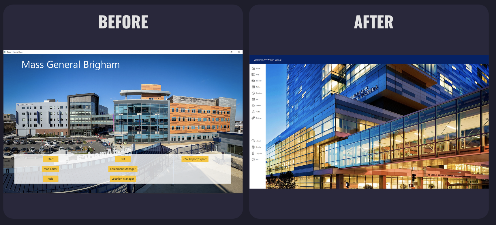
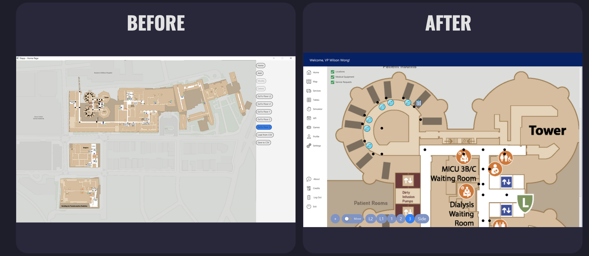
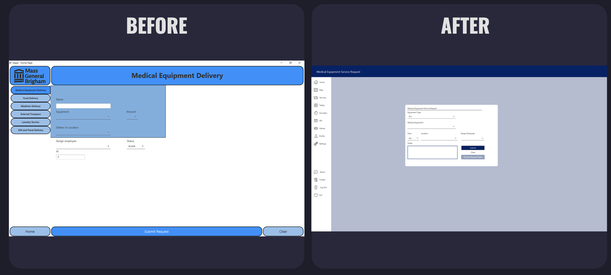

Software Engineering
Description
For this project, we worked to develop a desktop application for Mass General Brigham Hospital employees to access and use. The application focuses on creating and carrying out service requests, such as food, gift, and medical deliveries, as well as laundry and transportation services. Additionally, a database of locations, medical equipment, medical equipment service requests, and employees is maintained and implemented in an easy-to-use graphical interface. We also implemented computer vision and a couple classic games. The Medical Service Web Application was designed to assist medical professionals by making the process of making and carrying out service requests streamlined and easy to use. By including these features alongside a few delighter features, this application aims to make the lives of healthcare workers easier.
Execution
  I collaborated within a dynamic team of 9 developers to bring to fruition a desktop application tailored for
Mass
General Brigham Hospital employees. Employing the Agile Scrum methodology, our approach was structured,
iterative, and
collaborative. Administrative tasks were efficiently managed through tools such as Trello, Slack, and Google
Drive,
ensuring seamless communication and project organization. Daily scrums were conducted to keep the team
aligned, and
sprint expectations were diligently maintained.
My title was Software Feature Engineer. My primary focus within this multifaceted project was UI design and
feature integration. We
aimed to create an intuitive and
user-friendly
graphical interface to enhance the overall experience for healthcare professionals. The application's
user-centric
design aimed to streamline service requests, making it more accessible for medical professionals to navigate
and utilize
effectively.
In terms of technology, we utilized JavaFX and Scene Builder for writing the desktop application. This choice
allowed us
to develop a visually appealing and responsive UI. Additionally, we implemented a range of databases,
including
embedded, client, and remote databases, to efficiently manage data related to locations, medical equipment,
service
requests, and employees.
To ensure robust software architecture, we incorporated various design patterns such as the Singleton pattern
and
others. These patterns enhanced the scalability, maintainability, and overall structure of our application.
For those interested in exploring the intricacies of our application, we have a user guide available. It
provides a
comprehensive overview of the features, functionalities, and best practices for utilizing the system
effectively. The
guide serves as a valuable resource for users to get acquainted with the application's capabilities and make
the most
out of its offerings. Take
a look!
Our collaborative effort, adherence to best practices, and focus on user experience collectively contributed
to the
successful development of a desktop application that not only meets the practical needs of healthcare
professionals but
also integrates innovative features like computer vision and classic games for a well-rounded user
experience.
What did I learn?
This project stands out as one of the most challenging endeavors I've undertaken, making it quite a feat to
encapsulate
its complexity and the sense of accomplishment it brought. It's truly impossible to fully convey the
intricacies and
rewards embedded in this experience. If anything, I might even jest that I learned a tad too much, but it's
all in good
humor.
Navigating the terrain of this project illuminated the essence of working within a large team to achieve a
shared goal.
Each team member emerged as an invaluable resource, contributing diverse knowledge that became instrumental in
overcoming the project's challenges. The collaborative effort demonstrated that the strength of a team lies in
the
collective expertise of its individuals.
In the realm of software development, this project was a learning ground for various design patterns. It
instilled in me
a heightened awareness of the significance of thoughtful design decisions when crafting applications. My
journey also
deepened my familiarity with Java and its applications in developing desktop solutions, broadening my skill
set in the
process.
However, the lessons extended beyond coding and design. A newfound understanding of creating an optimal work
environment
and considering the perspectives of fellow developers emerged. Discovering a passion for teaching and
assisting others
in debugging programs became an unexpected but welcome revelation. This project underscored the importance of
a
collaborative and supportive atmosphere within a development team.
Furthermore, as I delved into perfecting the user interface, a significant portion of my time was devoted to
ensuring
its cohesiveness, responsiveness, structure, and adaptability. This not only contributed to the visual appeal
but also
facilitated ease of modification for other developers, promoting a seamless collaborative development process.
Reflecting on this journey, it became evident that my interests have expanded towards backend systems. The
desire to
delve deeper into this realm emerged as a key takeaway, opening new avenues for future exploration and growth.
In essence, this project was a crucible of challenges and triumphs, offering a rich tapestry of experiences
that shaped
not only my technical skills but also my approach towards teamwork, design considerations, and personal
aspirations in
the realm of software development.